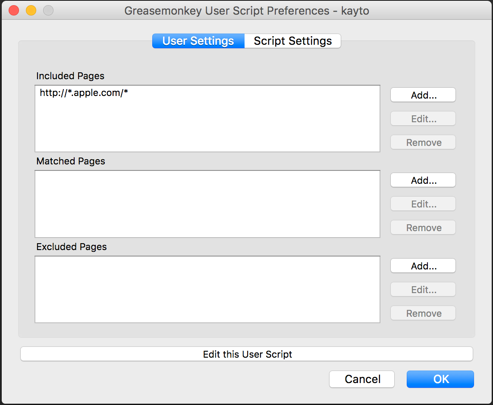
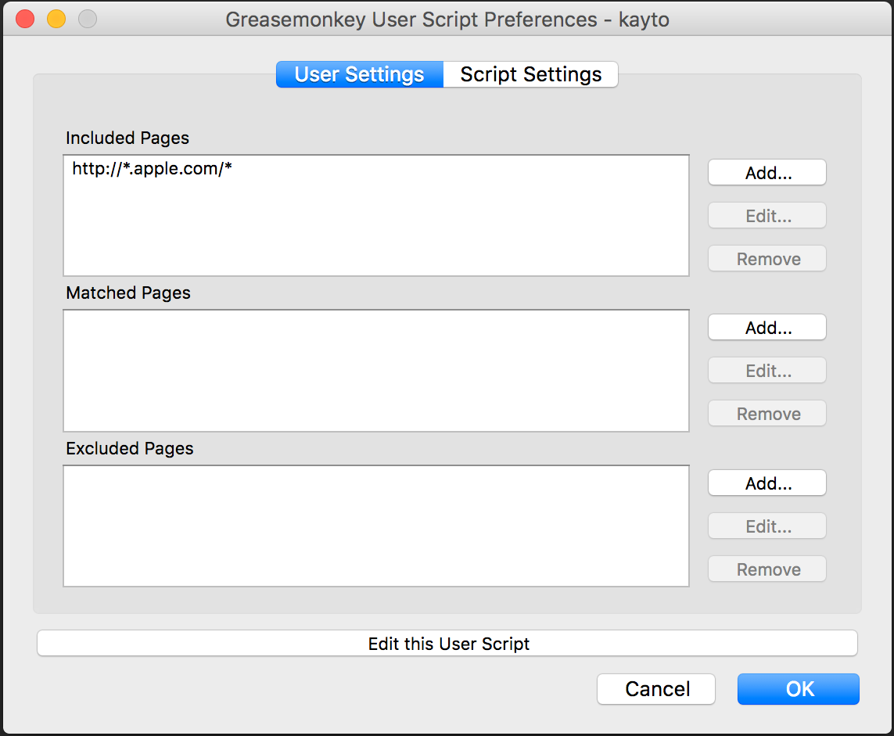
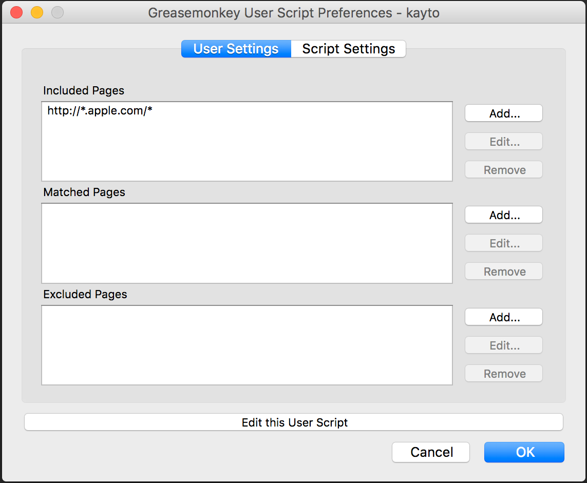

Kayto
Your UI Sidekick
Usage
Install the Greasemonkey Firefox add-on.
Navigate to
the github source user script
and click "Raw" to prompt the installation.
Edit the script preferences and enter the domains/pages where you wish to add the Kayto widget. Note: you can use
*
as a wildcard to match domains and pages.

 
